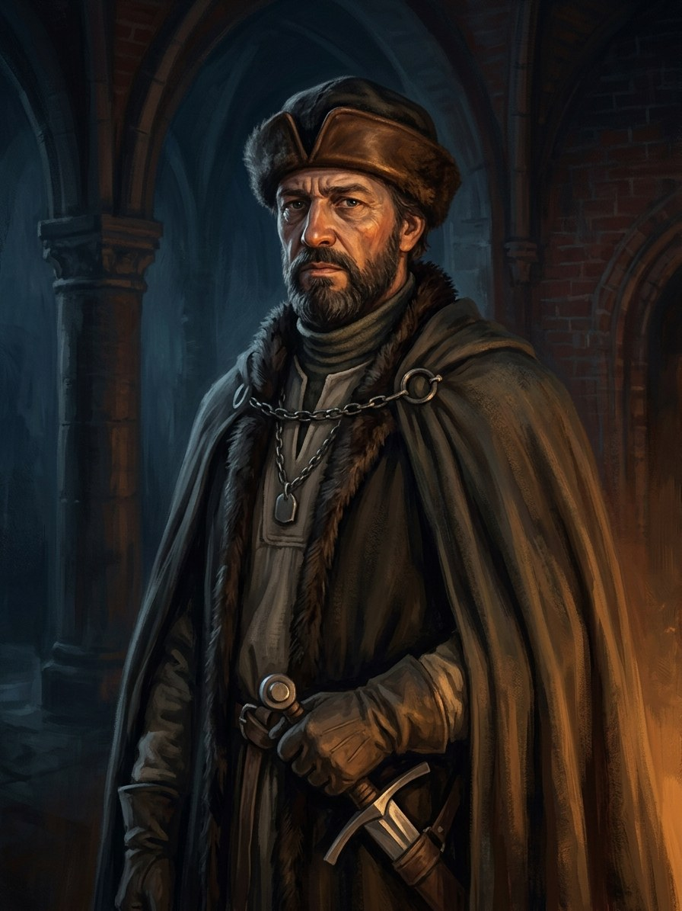

Žygimantas Kęstutaitis¶
Summary¶
Žygimantas Kęstutaitis (Sigismund; c. 1365 - 20 Mar 1440), youngest son of Kęstutis and Birutė, is Vytautas’s quiet brother. A hostage of the Order from 1390 to 1398, he lives to take the grand-ducal throne from Švitrigaila in the coup at Ašmena (night of 31 Aug 1432), wins at Pabaiskas (1435) through his son Mykolas, and rules with growing paranoia until boyars murder him at Trakai on Palm Sunday 1440. In Book V he is the antagonist: „Vytautas without the flame“, a man who wants to rule what his brother built and fears the boyars, Švitrigaila, and the dead his realm no longer feeds.
Žygimantas Kęstutaitis

Žygimantas Kęstutaitis · character¶
Tipas |
veikėjas |
Metai |
c. 1365–1440 |
Status |
Istoriniai duomenys |
Pastaba |
Grand Duke of Lithuania (1432–1440), brother to Vytautas; survivor of Order captivity, assassinated at Trakai. |
Appearance & tells¶
Slight, careful and unremarkable: the family’s grey eyes without their fire. He dresses plainly, as his brother did in old age. Eight years in Order castles (1390-98) taught him to read buildings as „people’s notes about themselves“: at Trakai in 1438 he begins every morning with the doors, all forty-seven, and knows which creaks, which sticks on wet days and which opens by itself (Book V ch. 18). He eats from the common bowl, a rule he once told Ona at Lyck and has never broken, and he has a list on which, on the third page at the bottom, is a place he keeps empty each night and cannot strike out. He is patient, suspicious and cold: he has inherited the family’s cunning and none of its faith.
Want · Need · Lie · Truth¶
Want (external) |
The throne his brother never crowned: to rule what Vytautas built as a Kęstutaitis, and to be safe from the boyars, Švitrigaila and the Order. |
Need (internal) |
To trust someone, and to be the brother who stands with the flame rather than against it. |
Lie they believe |
Safety lies in watching, lists, doors and purges; whoever sits next to you is the danger. |
Truth they learn (or refuse) |
Refused: the keeper breaks with him after the Krėva night; he dies in his father’s castle, murdered by the boyars he feared. |
Arc by book¶
Book II (1390-1398). A hostage named at Lyck (25 years old, ch. 6), left in Prussia as the pledge when Ona goes home in 1392 and Vytautas breaks with the Order (ch. 9); freed after Salynas (12 Oct 1398, ch. 19).
Book III-IV. In Vytautas’s shadow; remembered as the „quiet, stubborn brother who will say nothing“ (Book IV ch. 25). Not on page in Book IV ch. 21-30.
Book V (1430-1440). Rides to Christmemel with Švitrigaila (1431); in the summer of 1432 the lords plot with him at Trakai and Henė, holding only Jogaila’s stone, whispers; he asks the keeper to relight the flame for him (ch. 8). The coup at Ašmena (ch. 9) makes him Grand Duke, confirmed at Grodno under Bishop Oleśnicki’s reading of the king’s letter (ch. 10); Pabaiskas (ch. 13) wins the war. In the „castle of paranoia“ (ch. 18) he purges boyars and negotiates with the Habsburgs; at Krėva in August 1438 he sleeps in his father’s death cell, the residue shows him everything, Henė gives him the golden chain and the keeper refuses the hunt (ch. 19). He is murdered on Palm Sunday 1440 (ch. 21-22) and the Iron Wolf’s last howl rises from the lake.
Power & magic¶
Tier 0, no gift. In Book V Henė whispers to him, feeding his fear; whether he strikes a formal bargain is left open (the saga’s choice: Henė gives him the golden chain at Krėva in 1438, Book V ch. 19). The keeper’s wolves answer only whoever keeps the flame, so Žygimantas can order them and be refused, and the wolves will not shed Gediminid blood (the Pact’s rule, Book V ch. 13). He is the saga’s example of a Gediminid ruler who has inherited the family’s cunning without its faith.
Record vs saga¶
[Historical record]: Son of Kęstutis (and, in the saga, of Birutė), born c. 1365; a prisoner of Jogaila 1382-84 and escaped in 1384; a hostage of the Teutonic Knights from 1390 (the binding Book II decision, after pl.wikipedia: Jan 1390; VLE gives 1389) until 1398, freed after Salynas; Duke of Starodub. Named among the hostages demanded at Lyck (19 Jan 1390). Took the throne on the night of 31 Aug / 1 Sep 1432 at Ašmena, supported by Goštautas, Petras Mangirdaitis and Semen Olshanski; Švitrigaila fled to Polotsk. The Agreement of Grodno (15 Oct 1432, VLE; en.wikipedia: act of 25 Oct) made him Grand Duke for life under Jogaila, confirmed by Bishop Oleśnicki’s embassy; Jogaila was not present, issuing his own act at Lwów on 30 Oct 1432. He won the battle of Pabaiskas (1 Sep 1435) through his son Mykolas, granted Orthodox nobles equal rights (the Trakai privilege of 6 May 1434), negotiated with Albert II of Habsburg in 1438-39 and was killed at Trakai Island Castle on 20 Mar 1440 (Palm Sunday), probably by Švitrigaila’s supporters, the Czartoryski brothers. His only son, Mykolas, died in 1452.
[The saga’s invention]: His temperament and the „doors“ ritual; his night in the Krėva cell, the residue and Henė’s chain (Book V ch. 19); the paranoia castle; the keeper’s refusal and the wolves‘ non-intervention at the murder; the list with a place he cannot cross out; and the saga’s decision that he is Birutė’s son as well as Kęstutis’s (Vaidotas and Butautas are from an earlier wife). The record has no evidence of Henė.
Tarimas¶
ži-gi-MAN-tas kęs-tu-TAI-tis · IPA /ʒʲiːɡʲɪˈmɐntɐs kʲæːstʊˈtɐɪtʲɪs/ · English sound-alike „zhee-gih-MAHN-tahs kess-too-TYE-tis“. Stress on the third syllable. In Polish sources Zygmunt Kiejstutowicz, in English Sigismund Kęstutaitis. Do not confuse with Žygimantas Kaributaitis, killed at Pabaiskas, or with Sigismund of Luxembourg.
Appearances¶
Book II: ch. 6 (hostage list), 9, 19 (release), 20 and the afterword.
Book IV: ch. 22 („brother Žygimantas“, Vytautas’s thoughts) and ch. 25.
Book V: ch. 2, 3 (Christmemel), 8, 9, 10, 11, 12, 13, 15, 18, 19, 21, 22, 23, 24 and the afterword.
The Order captivity is 1390-98 (eight years, as Book V ch. 18 says); VLE gives 1389. Book IV ch. 12 names Žygimantas Kaributaitis, a different person.
Ryšiai
Antagonist of: V · The Wolf’s Legacy — mortal, assassinated
Bargained with: Šešėlių Pardavėjas / Henė (1432–1440)
Child of: Kęstutis
Enemy: Švitrigaila (1432–1440)
Holds: Auksinė grandinė (the strangling chain) (1438–1440) — Henė passes it to Žygimantas.
Hostage of: Teutonic Order (1390–1398) — Record (VLE): c. 1389/90-1398, given during Vytautas’s second defection, freed after Salynas.
Member of: Kęstutaičiai (Kęstutis’s line)
Parent of: Mykolas Žygimantaitis
Rules: Grand Duchy of Lithuania (1432–1440)
Took part in: Battle of Ašmena: Žygimantas defeats Švitrigaila · Grodno: Žygimantas sworn Grand Duke before Oleśnicki (Jogaila absent) · Treaty of Christmemel (Švitrigaila and the Order) — Witness. · Treaty of Lyck; hostages demanded — Hostage 1390-98. · Treaty of Salynas — Hostage freed. · Žygimantas assassinated at Trakai · Žygimantas’s coup at Ašmena
Chronologija¶
Year |
Event |
Book |
|---|---|---|
1390-01-19 |
II · Auksinis Šešėlis |
|
1398-10-12 |
II · Auksinis Šešėlis |
|
1431-06-19 |
V · Vilko Palikimas |
|
1432-08-31 |
V · Vilko Palikimas |
|
1432-10-15 |
Grodno: Žygimantas sworn Grand Duke before Oleśnicki (Jogaila absent) |
V · Vilko Palikimas |
1432-12-08 |
V · Vilko Palikimas |
|
1440-03-20 |
V · Vilko Palikimas |
Sąsajos¶
graph LR
book5["V · The Wolf's Legacy"]
ev_asmena_battle["Battle of Ašmena: Žygimantas defeats Švitrigaila"]
ev_christmemel["Treaty of Christmemel (Švitrigaila and the Order)"]
ev_coup_1432["Žygimantas's coup at Ašmena"]
ev_grodno_1432["Grodno: Žygimantas sworn Grand Duke before Oleśnicki (Jogaila absent)"]
ev_lyck_1390["Treaty of Lyck; hostages demanded"]
ev_salynas["Treaty of Salynas"]
ev_zygimantas_killed["Žygimantas assassinated at Trakai"]
gdl["Grand Duchy of Lithuania"]
golden_chain["Auksinė grandinė (the strangling chain)"]
kestutaiciai["Kęstutaičiai (Kęstutis's line)"]
kestutis["Kęstutis"]
mykolas["Mykolas Žygimantaitis"]
shadow_seller["Šešėlių Pardavėjas / Henė"]
svitrigaila["Švitrigaila"]
teutonic_order["Teutonic Order"]
zygimantas["Žygimantas Kęstutaitis"]
zygimantas -->|Member of| kestutaiciai
zygimantas -->|Rules| gdl
zygimantas -->|Took part in| ev_coup_1432
zygimantas -->|Took part in| ev_zygimantas_killed
zygimantas -->|Antagonist of| book5
zygimantas -->|Took part in| ev_christmemel
zygimantas -->|Took part in| ev_grodno_1432
zygimantas -->|Took part in| ev_asmena_battle
zygimantas -->|Hostage of| teutonic_order
zygimantas -->|Took part in| ev_lyck_1390
zygimantas -->|Took part in| ev_salynas
zygimantas -->|Parent of| mykolas
zygimantas -->|Holds| golden_chain
kestutis -->|Parent of| zygimantas
svitrigaila -->|Enemy| zygimantas
shadow_seller -->|Bargained with| zygimantas
style zygimantas stroke-width:3px